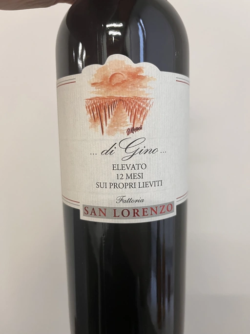

- Type
- Red Still, Dry
- Producer
- Fattoria San Lorenzo
- Vintage
- 2020
- Location
- Italy, IGP Marche
- Grapes
- Montepulciano, Sangiovese
- Alcohol
- 13.5
- Sugar
- 1
- Price
- 413 UAH, 470 UAH
- Cellar
- 2 bottles
Ratings
2022-11-15 - 7.50
It’s a nice and relatively funky Marche Rosso. It offers a beautiful and sweet mix of ripe cherry, liquorice, young leather and VA. Unexpectedly fresh, even elevated, thanks to VA. After a short time, it rounds and becomes complete. Juicy, almost full-bodied with nice tannin, acidity and fruit. It’s a good wine to witness the influence of VA. Good value.